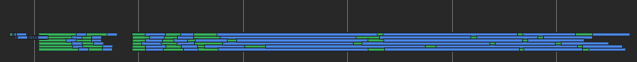

pyscript fsspec concurrency!
Summary
Following a long collaboration with my colleagues in the PyScript group and connecting together a deep stack of technologies, PyData workflows in a browser are now possible with full partial loading of data and concurrency. Here is an image of loading 1 year's worth of conda package download data from several parquet files in about 6s in my browser.

Introduction - the problem
Anaconda has historically catered particularly to data oriented python practitioners; just see the list of packages listed at https://www.anaconda.com/open-source . This is no surprise, given that Anaconda's founders created scipy and numpy, just the kind of software that proved difficult to install on a wide variety of hardware and OS.
However, python is used for so much more! In particular, the learning and web-dev spheres were not particularly in scope. With the emergence of PyScript, acquisition of edublocks and sponsorship of beeware, there is now more of a conscious effort to cater to the "99%", people who only need a little programming and don't need heavy-duty installation and IDEs.
Turning to PyScript in particular, it allows for python coding alongside browser front-end code for easy interaction in a browser, without any python installation at all. The browser is the sandbox. BUT: these people are not doing PyData workloads, they are a completely different community. However, data now powers so much of python (and the world), that we need to at least allow for cross-over, for PyData to be accessible in a browser.
However, popular packages such as pandas make a bunch of assumptions about the
system they are running on, particularly for loading from remote data (and in a
browser, everything is remote).
The Stack
There are many pieces of technology involved in getting data into a usable format. In the example here, the following are important:
- parquet, a file format for tabular data designed to be "cloud native", meaning you can find the metadata (fields, types) in a known location and only read those columns and parts of the data you need
- fsspec, a python library for fetching bytes from many different sources, including local files, http and cloud storage providers
- pyodide: a python interpreter that can run in a browser
- fastparquet, a python library for reading parquet files. Pyarrow is also available and more performant fo many datasets, but less readily usable under pyodide (if at all)
pandas, the most widely-used table library in python. It uses fsspec to load data from remote locations.


In this blog, I will show you how I glued them all together!
async??? CORS???
Running python in a browser imposes the following tricky conditions.
- The only communication with the outside world is via HTTP mediated by the browser itself. That means, that no python library depending on low-level network APIs (e.g., urllib) will work.
- Threads and normal asyncio don't work, so there cannot be normal parallelism or concurrency. Indeed, concurrency in pydata is always hard, because packages like pandas make synchronous calls to the IO layer, but fsspec goes to great lengths to be internally async and certain operations are fully concurrent.
- blocking calls can only be made from workers.
- the auth model for connecting to remote servers is fundamentally different from normal python; the browser assumes user-mediated flows with cookies, but a library like botorore (for AWS) uses tokens and secrets. Furthermore, even when data is exposed via public URLs, the browser will not allow cross-origin requests unless the server explicitly allows it.
The case study
- the old https://github.com/conda-incubator/condastats project (and Intake mention?)
- the pyscript previous POC (link???) and time baseline limit. Also mention pypi's 120day limit.
The work
This was a big effort just to make one graph! The final results can be found at https://github.com/fsspec/fsspec-proxy , with subdirectories:
- fsspec-proxy, a local bytes server which uses fsspec to read from remote, and provides a CORS-enables API to read from
- pyscript-fsspec-client, an fsspec implementation which can be used from pyscript workers and async IO module which reads bytes via the broswer's fetch API.
- an example of this in use, the code for main/worker which generated the graph. main.py runs in the browser main process, and calls worker.py in a worker process; it also sets up the async IO module. server.py is a convenient way to server the files locally to the browser (it adds header flags to SimpleHttpServer to allow buffer passing).
Work in other repos:
- fsspec.parquet: multi-file and passing filters
- rewriting the parquet files